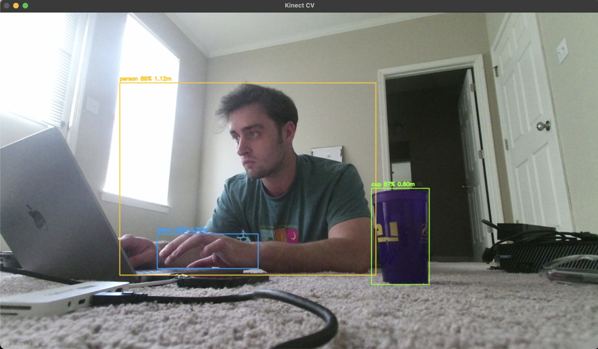
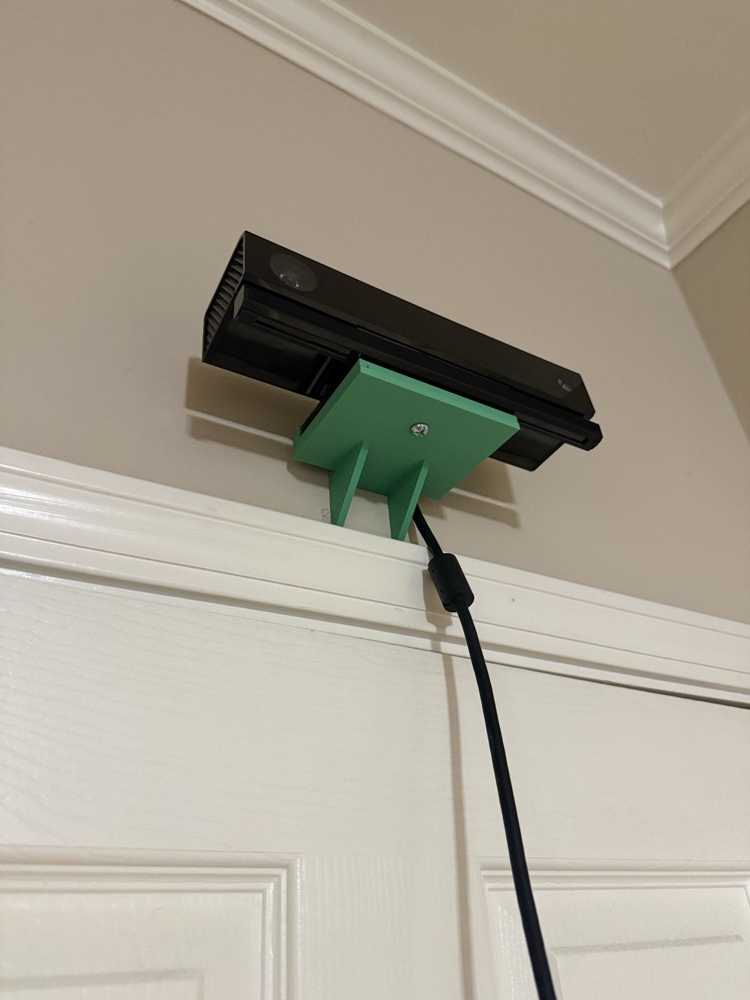
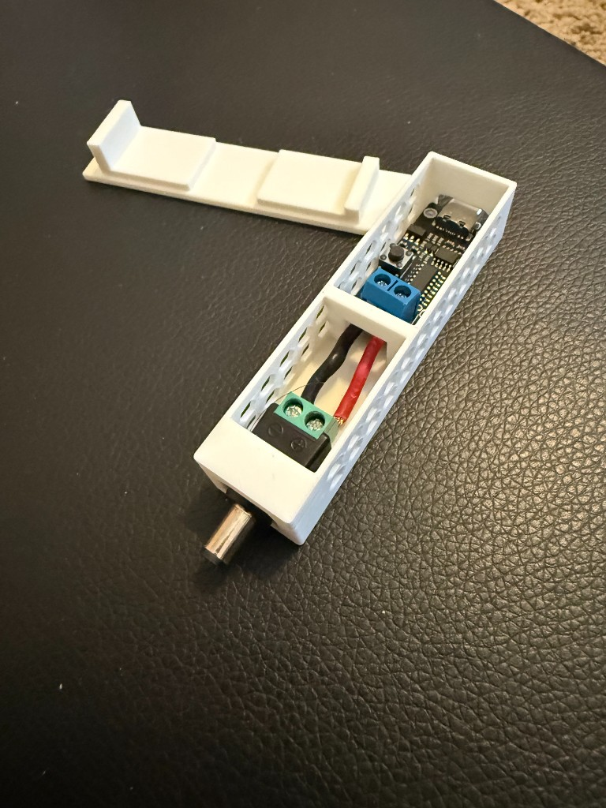
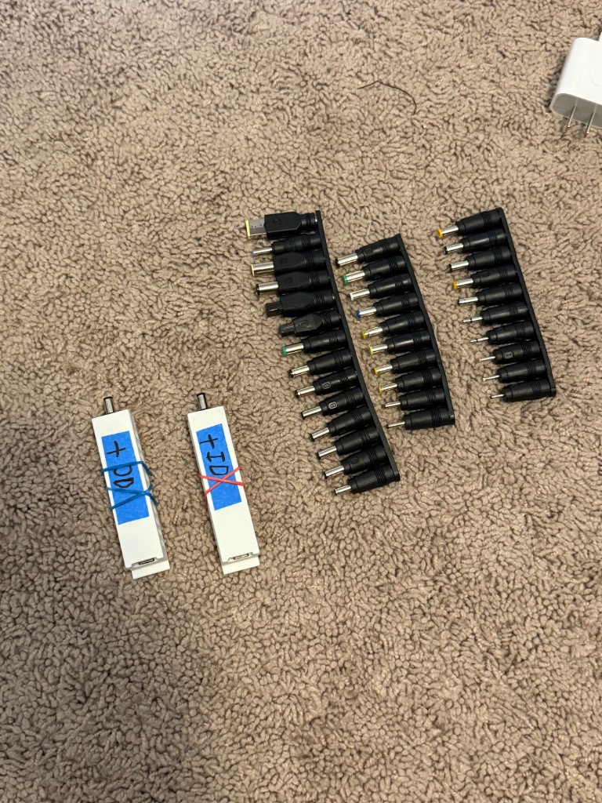

Computer Vision
Clip 1
Gaining access to different cameras within an Xbox Kinect V2.
Clip 2
On a road trip I began toying around with a system that uses CV to detect cars on two ONN webcams that can triangulate the cars to find relative velocities (initially just one calibrated on lane lines). Then, I used my phone's IMU to find my velocity and create a final prediction of passing by cars' velocities.

Kinect CV
Applying CV to Xbox Kinect V2 feed combining object detection with depth perception similar to an Oak-D-Lite for a fraction of the price (but way bigger and power hungry).

Custom 3-D Printed Quick Detach Xbox Kinect Mount
Simulations
Task Space and Joint Space Control Simulation
Ball-on-Track PID Controls Simulation (Godot)
Built in Godot after helping debug a friend's physical controls class project. A ball rides a track pivoted at the center; a second pivot, driven by a servo through an extension rod, tilts the track while a distance sensor reports the ball's position. The sim provides variable PID gains, sensor noise, and dead zones in both position and velocity, with the goal of driving the ball back to center.
Pool Simulation (Godot) — with Patrick Jasper
Joint project with Patrick Jasper. He built a CV system with a camera above a real pool table that detects the balls and cue, then projects an overlay showing where the shot would go. The goal is to combine that with an ML model trained in simulation to predict much more about game state from a given shot than just the cue ball's initial trajectory.
Other Ongoing Work
Bilateral Teleoperation Demo
I had some down time between shipments on my leg project, and elected to reproduce what I learned in a lab in my Assistive Robotics course where the professor did it in front of the class. This also was a chance to get familiar with how I am going to communicate with that test platform remotely.


Making Everything USB-C Powered
While setting up a demonstration for a fundraising presentation, there was a moment when the power supplies for critical devices seemed to be damaged (thankfully they weren't). I realized I didn't have a great on-the-spot solution for this other than carrying some form of backup. I learned about PD decoys after and designed a little device to convert USB-C to 5V, 9V, 12V, 15V, and 20V barrel connector outputs, and got adapters for the fixed barrel connector to a wide range of other possible connectors.
Clip 3
Variable Resistance Hand Rehabilitation Prototype for my Introduction to Robotics Class. Technically not ongoing but feels incomplete. Uses a flywheel with a star ratchet to provide intensity-based loading with unloaded recovery (to not pry open a patient's hand).